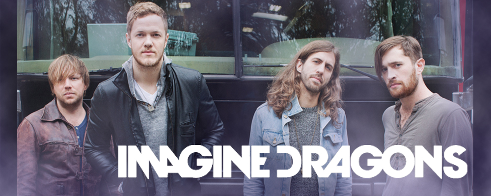

English by songs
Bands
- Imagine Dragons — американская инди-рок-группа, образованная в Лас-Вегасе, штат Невада в 2008 году. Стали известны после выпуска их дебютного студийного альбома Night Visions в сентябре 2012 года. Американский журнал Billboard назвал их самыми яркими новыми звёздами 2013 года, а журнал Rolling Stone назвал их сингл «Radioactive» самым большим рок-хитом года. 
Singers
Video With Lyrics
RADIOACTIVE
скачатьROOTS
скачатьRELEASE
скачатьSMOKE AND MIRRORS
скачатьTexts Songs
-
RADIOACTIVE
Original
I'm waking up to ash and dust I wipe my brow and sweat my rust I'm breathing in the chemicals I'm breaking in and shaping up Then checking out on the prison bus This is it the apocalypse I'm waking up I feel it in my bones Enough to make my system blow Welcome to the new age To the new age Welcome to the new age To the new age I'm radioactive Radioactive I'm radioactive Radioactive I raise my flag, dye my clothes It's a revolution I suppose We're painted red to fit right in I'm breaking in, shaping up Then checking out on the prison bus This is it, the apocalypse
Translate
Я пробуждаюсь среди пепла и пыли, Вытираю ржавчину, что проступает пóтом. Каждый вдох полон химикатов, Я разрушаюсь и формируюсь снова, Затем расплачиваюсь и выхожу из тюремногоавтобуса. Вот и всё, это апокалипсис. Это пробуждение, Ощущаю его каждой частичкой тела. Этого чувства достаточно, чтобы снесло крышу. Добро пожаловать в новую эру, В новую эру! Добро пожаловать в новую эру, В новую эру! Я - радиоактивен, Радиоактивен. Я - радиоактивен, Радиоактивен. Я поднимаю свое знамя, переодеваюсь в одежду другого цвета. Полагаю, что это - революция. Чтобы соответствовать ей, мы окрасились в красное. Я разрушаюсь и формируюсь снова, Затем расплачиваюсь и выхожу из тюремного автобуса. Вот и все, это апокалипсис.
-
ROOTS
Original
Don’t throw stones at me Don’t tell anybody Trouble finds me, All the noise of this Has made me lose my belief I’m going back to my roots Another day, another door Another high, another low Rock bottom, rock bottom, rock bottom[2x] I’m going back to my roots Had to lose my way To know which road to take Trouble found me, All I look forward Washed away by a wave I know it’s gotta go like this, I know Hell will always come before you grow Trouble found me, trouble found me I know it’s gotta go like this, I know Hell will always come before you grow Trouble found me, trouble found me
Перевод
Не кидайте в меня камни, Никому не говори, Иначе неприятности найдут меня. Весь этот балаган Лишил меня веры. Я собираюсь вернуться к своим корням. В другой день, через другую дверь. Другие высоты, другие падения. Достиг дна, достиг дна, достиг дна. Я собираюсь вернуться к своим корням[2x] Мне пришлось сбиться с пути, Чтобы понять какой дорогой идти. Неприятности нашли меня, Все мои надежды Смыло волной. Я знаю, что так и должно было быть, я знаю. Ад всегда настает раньше, чем успеешь повзрослеть. Неприятности нашли меня, неприятности нашли меня. Я знаю, что так и должно было быть, я знаю. Ад всегда настает раньше, чем успеешь повзрослеть. Неприятности нашли меня, неприятности нашли меня.
-
RELEASE
Original
Twenty miles from anyone Set my sights on the setting sun Heaven talks but not to me Cause heaven knows that nothing good comes free Desolation tragedy Is there nothing good in me? I've let me down down down down Petty lies to everyone In the hopes that I could be someone Heaven talks but not to me And now I wonder if it's meant to be Desolation tragedy Is there nothing good in me? I've let me down down down down. But I'll take your word Cause after all you've never lied Oh not at all But look at me Oh what a mess I get caught up in the things that matter the least Oh let me have release I've let me down down down down
Перевод
В двадцати милях от всех Уставил взор на закат, Небеса говорят, но не со мной Потому что небеса знают, что хорошее не приходит бесплатно. Запущенная трагедия, Неужели во мне нет ничего хорошего? Я позволил себе пасть Маленькая ложь каждому В надежде, что я мог бы быть кем-то. Небеса говорят, но не со мной И теперь я задаюсь вопросом, неужели так и должно было случиться? Запущенная трагедия Неужели во мне нет ничего хорошего? Я позволил себе пасть. Но я верю вам на слово В конце концов вы никогда не лгали Ох, вовсе нет. Но посмотрите на меня Ох, какой ужас, Я увяз в том, что совсем не важно О, дайте мне освободиться Я позволил себе пасть.
-
SMOKE AND MIRRORS
Original
This is my word This is my way Show me a sign Sweep me away This is my word Heartbreaker, gatekeeper I'm feeling far away, I'm feeling right there Deep in my heart, deep in my mind Take me away, take me away This is my word Dream maker, life taker Open up my mind All I believe Is it a dream That comes crashing down on me All that I hope Is it just smoke and mirrors I want to believe But all that I know Is it just smoke and mirrors
Перевод
Это мое слово, это мой путь Дай мне знак, унеси меня прочь Это мое слово; Разбивающий сердца, привратник Я чувствую, что я далеко, я именно там Глубоко в моем сердце, глубоко в моем сознании Забери меня, забери меня Это моё слово, Создающий мечты, забирающий жизнь Открой мой разум Всё, во что я верю — всего лишь сон? Который обрушивается на меня? Всё, что у меня есть, Это всего лишь обман? Я хочу верить Но всё, что у меня есть, Это всего лишь обман?